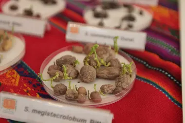
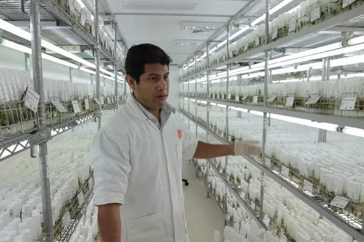

Space Potatoes
The company NASA teamed up with Peru-based International Potato Centre to find out if it is possible for potatoes to grow in space in harsh conditions. “The Martian is completely possible,” says astrobiologist Julio Valdivia-Silva, the principal scientist working on the experiment in Peru. Valdivia-Silva says the technology is growing at an “exponential” rate just as efforts to learn more about Mars are gathering pace.
Valdivia-Silva and his team aim to replicate Mars-like conditions on earth using a dome to create the same atmosphere, and soil consisting of sands brought from the Pampas de la Joya desert, part of the Atacama desert in southern Peru and one of the world’s driest and most nutrient-poor ecosystems. Why the potato? The resilience of the humble spud combined with its huge number of species, genotypes and varieties means it can be grown from sea level to 4,700 metres above sea level while resisting drought, extreme heat and cold, salinity and UV radiation. It is also pound-for-pound one of the most nutritious staples as it is packed with vitamin C, zinc, iron, proteins and carbohydrates.
But Mars may be a whole new league of inhospitability. Temperatures on the planet vary wildly, between a high of 20C (68F) at its equator in summer to a low of -153C at the poles, according to Nasa . Its atmosphere is 95% carbon dioxide, 3% nitrogen and just 0.13% oxygen, which means the potatoes may grow fast but end up undersized. In addition, the dusty planet lacks ground water and there are winds of up to 60mph.

Mars may be a whole new league of inhospitability. Temperatures on the planet vary wildly, between a high of 20C (68F) at its equator in summer to a low of -153C at the poles, according to Nasa . Its atmosphere is 95% carbon dioxide, 3% nitrogen and just 0.13% oxygen, which means the potatoes may grow fast but end up undersized. In addition, the dusty planet lacks ground water and there are winds of up to 60mph.
But Jan Kreuze, chief virologist at CIP, believes growing potatoes on Mars is possible.
“Potatoes may colonise Mars before humans do,” he says. “Right now it’s science fiction … Then you do the science and it becomes a reality.”
Another challenge is the fact that Mars’ gravity is just one-third that of the Earth. That is one thing for which the experiment cannot test, says Kreuze, but the potato has another advantage over other crop staples in that it grows underground.
CIP, a non-profit organisation, houses more than 4,500 types of potatoes, mostly Peruvian, in its propagation chambers. The centre is the custodian of the world’s largest in vitro gene bank, which contains clonal and seed collections of the tuber. There are so many varieties, some are only known by codes. One of them may just have the genetic makeup to survive on Mars.
